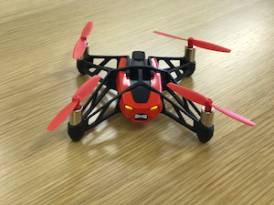

4. ドローンを飛ばしてみよう¶
いよいよ、ドローン飛ばします。ドローンの電源を入れてください。
電源ボタンを押すとライト色が、赤 → 橙 → 緑 と変わっていきます。ライトが緑色になったら操作可能な状態です。
4.1. ドローンのUUIDを調べよう¶
findDrone.js 実行してみましょう。
下記コマンドを実行してください。
node findDrone.js
25:undefined(34942f51a49d43b1adac6e029ba2eb58) RSSI-74
26:undefined(1787e42be209403ba2fde5821d356650) RSSI-78
27:undefined(f34124eb29744001b0994c9b8521fb29) RSSI-70
28:undefined(d1ed53c48f374c83b57e9c64369f94a6) RSSI-84
29:Alta HR(1577e5a201c4458fbeccea0b338902d2) RSSI-64
30:undefined(133c66539db043b6a1c344f060d60103) RSSI-71
31:undefined(678774b28d2f4e528c75e17a067759f2) RSSI-72
32:Mambo_640552(bcddd2d5f9bb47e7be84ed2e4b3b9361) RSSI-35
33:undefined(514f76a1d8e44e46aedd496ca41bfc5c) RSSI-76
34:undefined(7561ff0ec3fd4f7c9d97cd6eff6085b4) RSSI-59
35:undefined(aceb1517cf154ca58cca09e9347dc201) RSSI-77
36:undefined(9c5d9f0e827540bbb30cfa6e799c5b0a) RSSI-72
名前が”Mambo_***********”がドローンの名前になります。
カッコ内に書かれている UUID をコピーしてください。
見つかったら、control + c で処理をストップさせてください。
4.2. ドローンを操作してみよう¶
先ほどのUUIDを使い、controller.js のxxxxxxxxxxxxとなっている部分を書き換えましょう。
書き換えたら、下記コマンドを実行してください。
node controller.js
こうなったら成功です。PCとDroneがBluetoothで接続されました。
Connected to drone => XXXXXX
あとはキーボードで以下のアサインされているキーを押せば操作できます。
操縦方法（キーアサイン)
キー 動作 メソッド t 離陸 d.takeOff() w 前進 d.forward({ steps: 1〜100 }) s 後退 d.backward({ steps: 1〜100 }) a 左水平移動 d.tiltLeft({ steps: 1〜100 }) d 右水平移動 d.tiltRight({ steps: 1〜100 }) ↑ 上昇 d.up({ steps: 1〜100 }) ↓ 下降 d.down({ steps: 1〜100 }) ← 左旋回 d.turnLeft({ steps: 1〜100 }) → 右旋回 d.turnRight({ steps: 1〜100 }) i 前方宙返り d.frontFlip({ steps: 1〜100 }) k 後方宙返り d.backFlip({ steps: 1〜100 }) j 左に宙返り d.leftFlip({ steps: 1〜100 }) l 右に宙返り d.rightFlip({ steps: 1〜100 }) q 着陸 d.land() x 接続解除 d.disconnect() m 緊急停止 d.emergency()
Warning
宙返りは行う場合は、ドローンからアクセサリーを外してください！